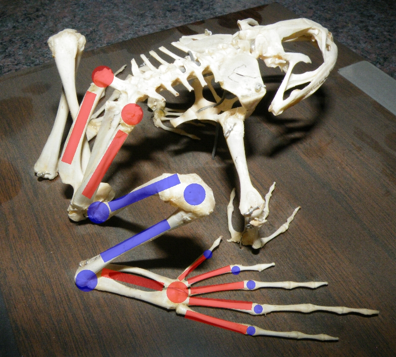
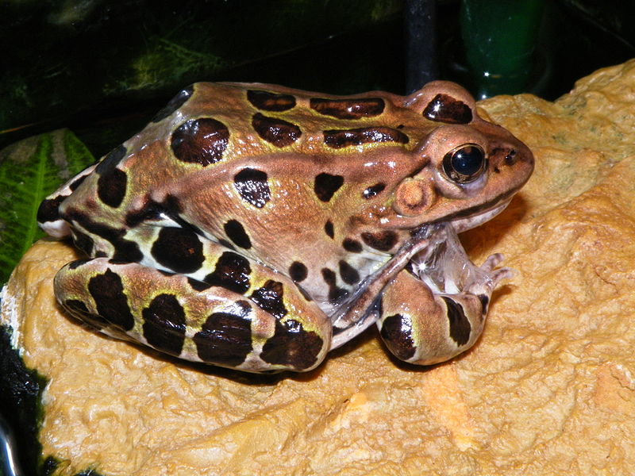

Frogs have no tail, except as larvae, and most have long hind legs, elongated ankle bones, webbed toes, no claws, large eyes, and a smooth or warty skin. They have short vertebral columns, with no more than 10 free vertebrae and fused tailbones (urostyle or coccyx).[42] Frogs range in size from Paedophryne amauensis of Papua New Guinea that is 7.7 mm (0.30 in) in snout–to–vent length[43] to the up to 32 cm (13 in) and 3.25 kg (7.2 lb) goliath frog (Conraua goliath) of central Africa.[44] There are prehistoric, extinct species that reached even larger sizes.
-

- Feet and legs
- Skin
- Respiration and circulation
The structure of the feet and legs varies greatly among frog species, depending in part on whether they live primarily on the ground, in water, in trees, or in burrows. Frogs must be able to move quickly through their environment to catch prey and escape predators, and numerous adaptations help them to do so. Most frogs are either proficient at jumping or are descended from ancestors that were, with much of the musculoskeletal morphology modified for this purpose. The tibia, fibula, and tarsals have been fused into a single, strong bone, as have the radius and ulna in the fore limbs (which must absorb the impact on landing). The metatarsals have become elongated to add to the leg length and allow frogs to push against the ground for a longer period on take-off. The ilium has elongated and formed a mobile joint with the sacrum which, in specialist jumpers such as ranids and hylids, functions as an additional limb joint to further power the leaps. The tail vertebrae have fused into a urostyle which is retracted inside the pelvis. This enables the force to be transferred from the legs to the body during a leap.[42]
A frog's skin is protective, has a respiratory function, can absorb water, and helps control body temperature. It has many glands, particularly on the head and back, which often exude distasteful and toxic substances (granular glands). The secretion is often sticky and helps keep the skin moist, protects against the entry of moulds and bacteria, and make the animal slippery and more able to escape from predators.[53] The skin is shed every few weeks. It usually splits down the middle of the back and across the belly, and the frog pulls its arms and legs free. The sloughed skin is then worked towards the head where it is quickly eaten.[54]
Like other amphibians, oxygen can pass through their highly permeable skins. This unique feature allows them to remain in places without access to the air, respiring through their skins. Ribs are generally absent, so the lungs are filled by buccal pumping and a frog deprived of its lungs can maintain its body functions without them.[62] The fully aquatic Bornean flat-headed frog (Barbourula kalimantanensis) is the first frog known to lack lungs entirely.[65]
Frogs have three-chambered hearts, a feature they share with lizards. Oxygenated blood from the lungs and de-oxygenated blood from the respiring tissues enter the heart through separate atria. When these chambers contract, the two blood streams pass into a common ventricle before being pumped via a spiral valve to the appropriate vessel, the aorta for oxygenated blood and pulmonary artery for deoxygenated blood.[66]